DickeyFullerTest¶
-
class
DickeyFullerTest(*args)¶ The Dickey-Fuller stationarity test.
Notes
The Dickey-Fuller test checks the stationarity of a scalar time series using one time series. It assumes that the 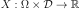 process with
 , discretized on the time grid
, discretized on the time grid  writes:
writes:(1)¶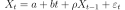
where
 and where
and where  or
or  or both
or both  can be assumed to be equal to 0.
can be assumed to be equal to 0.The Dickey-Fuller test checks whether the random perturbation at time
 vanishes with time.
vanishes with time.When
 and 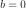, the model (1) is said to have a drift. When
and 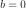, the model (1) is said to have a drift. When  and
and  , the model (1) is said to have a linear trend.
, the model (1) is said to have a linear trend.In the model (1), the only way to have stochastic non stationarity is to have
 (if , then the process diverges with time which is readily seen in the data). In the general case, the Dickey-Fuller test is a unit root test to detect whether against 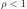:
(if , then the process diverges with time which is readily seen in the data). In the general case, the Dickey-Fuller test is a unit root test to detect whether against 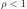:The test statistics and its limit distribution depend on the a priori knowledge we have on
and . In case of absence of a priori knowledge on the structure of the model, several authors have proposed a global strategy to cover all the subcases of the model (1), depending on the possible values on and .The strategy implemented is recommended by Enders (Applied Econometric Times Series, Enders, W., second edition, John Wiley & sons editions, 2004.).
We note
 the data, by 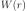 the Wiener process, and 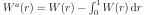, 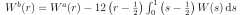.
the data, by 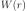 the Wiener process, and 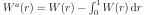, 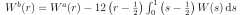.1. We assume the model (2):
(2)¶
The coefficients
 are estimated by
are estimated by  using ordinary least-squares fitting, which leads to:
using ordinary least-squares fitting, which leads to:(3)¶
![\underbrace{\left(
\begin{array}{lll}
\displaystyle n-1 &\sum_{i=1}^n t_{i} &\sum_{i=2}^n y_{i-1}\\
\displaystyle \sum_{i=1}^n t_{i} &\sum_{i=1}^n t_{i}^2 &\sum_{i=2}^n t_{i} y_{i-1}\\
\displaystyle \sum_{i=2}^n y_{i-1}& \sum_{i=2}^n t_{i}y_{i-1} &\sum_{i=2}^n y_{i-1}^2
\end{array}
\right)}_{\mat{M}}
\left(
\begin{array}{c}
\hat{a}_n\\
\hat{b}_n\\
\hat{\rho}_n
\end{array}
\right)=
\left(
\begin{array}{l}
\displaystyle \sum_{i=1}^n y_{i} \\
\displaystyle \sum_{i=1}^n t_{i} y_{i}\\
\displaystyle \sum_{i=2}^n y_{i-1} y_{i}
\end{array}
\right)](../../_images/math/8cc991704628bd29faa3eb80fbe09243bb7ac163.svg)
We first test:
(4)¶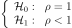
thanks to the Student statistics:
where
 is the least square estimate of the standard deviation of
is the least square estimate of the standard deviation of  , given by:
, given by:
which converges in distribution to the Dickey-Fuller distribution associated to the model with drift and trend:

The null hypothesis 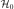 from (4) is accepted when 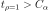 where
 is the test threshold of level
is the test threshold of level  .
.The quantiles of the Dickey-Fuller statistics for the model with drift and linear trend are:
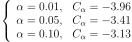
1.1. Case 1: The null hypothesis from (4) is rejected
We test whether :
(5)¶

where the statistics 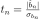 converges in distribution to the Student distribution
Studentwith , where
, where  is the least square estimate of the standard deviation of
is the least square estimate of the standard deviation of  , given by:
, given by:- The decision to be taken is:
- If from (5) is rejected, then the model 1 (2) is confirmed. And the test (4) proved that the unit root is rejected : . We then conclude that the final model is : whith
 which is a trend stationary model.
which is a trend stationary model. - If from (5) is accepted, then the model 1 (2) is not confirmed, since the trend presence is rejected and the test (4) is not conclusive (since based on a wrong model). We then have to test the second model (7).
- If from (5) is rejected, then the model 1 (2) is confirmed. And the test (4) proved that the unit root is rejected : . We then conclude that the final model is : whith
1.2. Case 2: The null hypothesis from (4) is accepted
We test whether :
(6)¶

with the Fisher statistics:
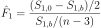
where 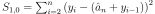 is the sum of the square errors of the model 1 (2) assuming from (6) and 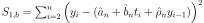 is the same sum when we make no assumption on
 and .
and .The statistics
 converges in distribution to the Fisher-Snedecor distribution
converges in distribution to the Fisher-Snedecor distribution FisherSnedecorwith . The null hypothesis from (4) is accepted when where
. The null hypothesis from (4) is accepted when where  is the test threshold of level .
is the test threshold of level .- The decision to be taken is:
- If from (6) is rejected, then the model 1 (2) is confirmed since the presence of linear trend is confirmed. And the test (4) proved that the unit root is accepted: . We then conclude that the model is: which is a non stationary model.
- If from (6) is accepted, then the model 1 (2) is not confirmed, since the presence of the linear trend is rejected and the test (4) is not conclusive (since based on a wrong model). We then have to test the second model (7).
- If from (6) is rejected, then the model 1 (2) is confirmed since the presence of linear trend is confirmed. And the test (4) proved that the unit root is accepted:
2. We assume the model (7):
(7)¶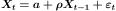
The coefficients
 are estimated as follows:
are estimated as follows:(8)¶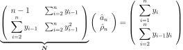
We first test:
(9)¶

thanks to the Student statistics:
where
is the least square estimate of the standard deviation of , given by:
which converges in distribution to the Dickey-Fuller distribution associated to the model with drift and no linear trend:
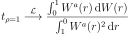
The null hypothesis from (9) is accepted when where
is the test threshold of level .The quantiles of the Dickey-Fuller statistics for the model with drift are:
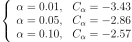
2.1. Case 1: The null hypothesis from (9) is rejected
We test whether 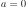:
(10)¶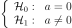
where the statistics 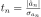 converges in distribution to the Student distribution
Studentwith 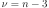, where 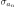 is the least square estimate of the standard deviation of 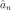, given by: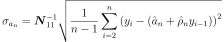
- The decision to be taken is:
- If from (10) is rejected, then the model 2 (7) is confirmed. And the test (9) proved that the unit root is rejected: . We then conclude that the final model is: whith which is a stationary model.
- If from (10) is accepted, then the model 2 (7) is not confirmed, since the drift presence is rejected and the test (4) is not conclusive (since based on a wrong model). We then have to test the third model (12).
- If from (10) is rejected, then the model 2 (7) is confirmed. And the test (9) proved that the unit root is rejected: . We then conclude that the final model is: whith
2.2. Case 2: The null hypothesis from (9) is accepted
We test whether 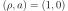:
(11)¶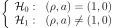
with a Fisher test. The statistics is:
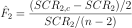
where
 is the sum of the square errors of the model 2 (7) assuming from (11) and
is the sum of the square errors of the model 2 (7) assuming from (11) and  is the same sum when we make no assumption on and .
is the same sum when we make no assumption on and .The statistics
 converges in distribution to the Fisher-Snedecor distribution
converges in distribution to the Fisher-Snedecor distribution FisherSnedecorwith . The null hypothesis from (4) is accepted if when 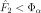 where is the test threshold of level .
. The null hypothesis from (4) is accepted if when 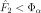 where is the test threshold of level .- The decision to be taken is:
- If from (11) is rejected, then the model 2 (7) is confirmed since the presence of the drift is confirmed. And the test (9) proved that the unit root is accepted:
 . We then conclude that the model is: 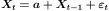 which is a non stationary model.
. We then conclude that the model is: 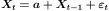 which is a non stationary model. - If from (11) is accepted, then the model 2 (7) is not confirmed, since the drift presence is rejected and the test (9) is not conclusive (since based on a wrong model). We then have to test the third model (12).
- If from (11) is rejected, then the model 2 (7) is confirmed since the presence of the drift is confirmed. And the test (9) proved that the unit root is accepted:
3. We assume the model (12):
(12)¶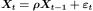
The coefficients
are estimated as follows:(13)¶

We first test:
(14)¶

thanks to the Student statistics:
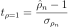
where
is the least square estimate of the standard deviation of , given by: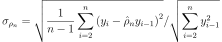
which converges in distribution to the Dickey-Fuller distribution associated to the random walk model:
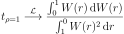
The null hypothesis from (14) is accepted when where
is the test threshold of level .The quantiles of the Dickey-Fuller statistics for the random walk model are:
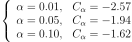
- The decision to be taken is:
Examples
Create an ARMA process and generate a time series:
>>> import openturns as ot >>> arcoefficients = ot.ARMACoefficients([0.3]) >>> macoefficients = ot.ARMACoefficients(0) >>> timeGrid = ot.RegularGrid(0.0, 0.1, 10) >>> whiteNoise = ot.WhiteNoise(ot.Normal(), timeGrid) >>> myARMA = ot.ARMA(arcoefficients, macoefficients, whiteNoise)
>>> realization = ot.TimeSeries(myARMA.getRealization()) >>> test = ot.DickeyFullerTest(realization)
Test the stationarity of the data without any asumption on the model:
>>> globalRes = test.runStrategy()
Test the stationarity knowing you have a drift and linear trend model:
>>> res1 = test.testUnitRootInDriftAndLinearTrendModel(0.95)
Test the stationarity knowing you have a drift model:
>>> res2 = test.testUnitRootInDriftModel(0.95)
Test the stationarity knowing you have an AR1 model:
>>> res3 = test.testUnitRootInAR1Model(0.95)
Methods
getClassName()Accessor to the object’s name. getId()Accessor to the object’s id. getName()Accessor to the object’s name. getShadowedId()Accessor to the object’s shadowed id. getVisibility()Accessor to the object’s visibility state. hasName()Test if the object is named. hasVisibleName()Test if the object has a distinguishable name. runStrategy([level])Test the stationarity without any assumption on the model. setName(name)Accessor to the object’s name. setShadowedId(id)Accessor to the object’s shadowed id. setVisibility(visible)Accessor to the object’s visibility state. testNoUnitRootAndNoDriftInDriftModel([level])Test for null drift in model without unit root. testNoUnitRootAndNoLinearTrendInDriftAndLinearTrendModel([level])Test for trend in model without unit root. testUnitRootAndNoDriftInDriftModel([level])Test for null drift in model with unit root. testUnitRootAndNoLinearTrendInDriftAndLinearTrendModel([level])Test for linear trend in model with unit root. testUnitRootInAR1Model([level])Test for unit root in AR1 model. testUnitRootInDriftAndLinearTrendModel([level])Test for unit root in model with drift and trend. testUnitRootInDriftModel([level])Test for unit root in model with drift. getVerbose setVerbose -
__init__(*args)¶ Initialize self. See help(type(self)) for accurate signature.
-
getClassName()¶ Accessor to the object’s name.
Returns: - class_name : str
The object class name (object.__class__.__name__).
-
getId()¶ Accessor to the object’s id.
Returns: - id : int
Internal unique identifier.
-
getName()¶ Accessor to the object’s name.
Returns: - name : str
The name of the object.
-
getShadowedId()¶ Accessor to the object’s shadowed id.
Returns: - id : int
Internal unique identifier.
-
getVisibility()¶ Accessor to the object’s visibility state.
Returns: - visible : bool
Visibility flag.
-
hasName()¶ Test if the object is named.
Returns: - hasName : bool
True if the name is not empty.
-
hasVisibleName()¶ Test if the object has a distinguishable name.
Returns: - hasVisibleName : bool
True if the name is not empty and not the default one.
-
runStrategy(level=0.95)¶ Test the stationarity without any assumption on the model.
Parameters: - alpha : float,

The first order error of the test.
By default,
 .
.
Returns: - testResult :
TestResult Results container of the tests. The strategy if the one described above.
- alpha : float,
-
setName(name)¶ Accessor to the object’s name.
Parameters: - name : str
The name of the object.
-
setShadowedId(id)¶ Accessor to the object’s shadowed id.
Parameters: - id : int
Internal unique identifier.
-
setVisibility(visible)¶ Accessor to the object’s visibility state.
Parameters: - visible : bool
Visibility flag.
-
testNoUnitRootAndNoDriftInDriftModel(level=0.95)¶ Test for null drift in model without unit root.
Parameters: - alpha : float,
The first order error of the test.
By default,
.
Returns: - testResult :
TestResult Results container of the test detailed in (10).
- alpha : float,
-
testNoUnitRootAndNoLinearTrendInDriftAndLinearTrendModel(level=0.95)¶ Test for trend in model without unit root.
Parameters: - alpha : float,
The first order error of the test.
By default,
.
Returns: - testResult :
TestResult Results container of the test detailed in (5).
- alpha : float,
-
testUnitRootAndNoDriftInDriftModel(level=0.95)¶ Test for null drift in model with unit root.
Parameters: - alpha : float,
The first order error of the test.
By default,
.
Returns: - testResult :
TestResult Results container of the test detailed in (11).
- alpha : float,
-
testUnitRootAndNoLinearTrendInDriftAndLinearTrendModel(level=0.95)¶ Test for linear trend in model with unit root.
Parameters: - alpha : float,
The first order error of the test.
By default,
Returns: - testResult :
TestResult Results container of the test detailed in (6).
- alpha : float,
-
testUnitRootInAR1Model(level=0.95)¶ Test for unit root in AR1 model.
Parameters: - alpha : float,
The first order error of the test.
By default,
.
Returns: - testResult :
TestResult Results container of the test detailed in (14).
- alpha : float,
-
testUnitRootInDriftAndLinearTrendModel(level=0.95)¶ Test for unit root in model with drift and trend.
Parameters: - alpha : float,
The first order error of the test.
By default,
.
Returns: - testResult :
TestResult Results container of the test detailed in (4).
- alpha : float,
-
testUnitRootInDriftModel(level=0.95)¶ Test for unit root in model with drift.
Parameters: - alpha : float,
The first order error of the test.
By default,
.
Returns: - testResult :
TestResult Results container of the test detailed in (9).
- alpha : float,